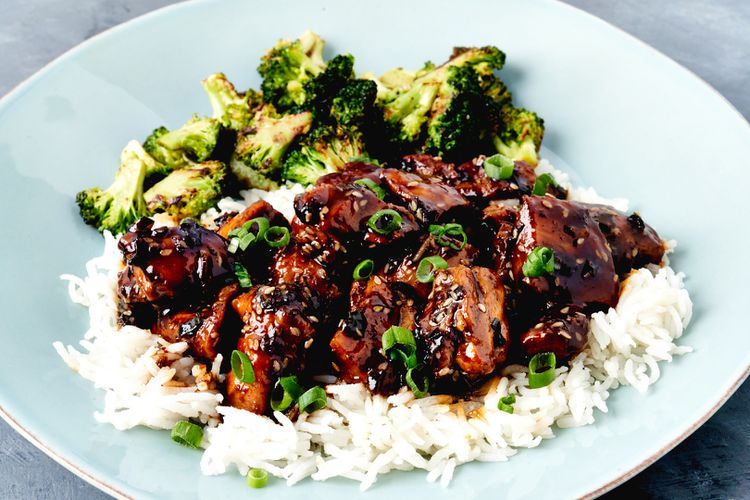

Home
Chicken Teriyaki Recipe

Description
This is some goated chicken teriyaki if I do say so myself. I could eat this for breakfast lunch and dinner. I hope you enjoy it as much as I do.
Ingredients
- 1 pound of boneless, skinless chicken thighs
- 1-2 bottles of teriyaki sauce/marinade
Steps
- First, you will cut all the excess fat off of your boneless, skinless chicken thighs with a pair of scissors.
- Next, you'll let throw all your chicken thighs in a bowl and let them marinade for 30 minutes - 2 hours.
- After that, you'll throw the thighs into your air fryer, air frying them for 5 minutes on each side at 385 degrees fahrenheit.
- Once they're done, you'll take them out and let them rest for 5-10 minutes before cutting and eating.